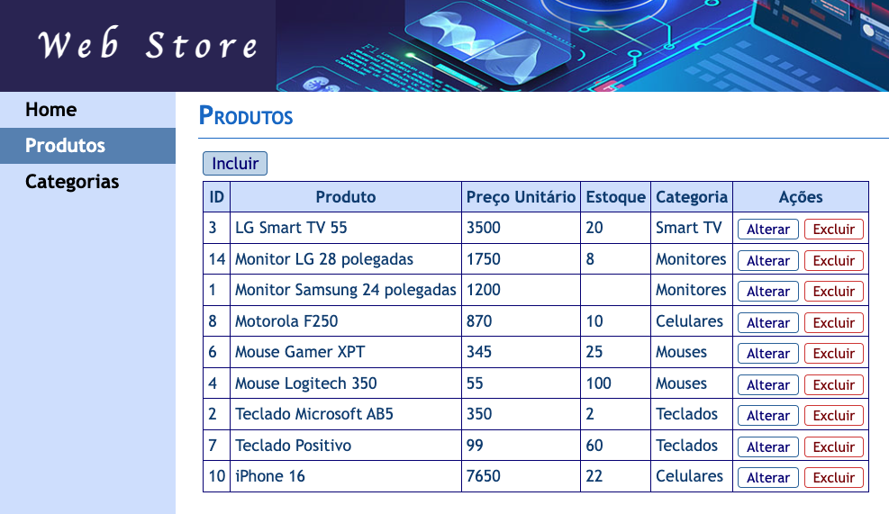

Arquitetura de Software
Instruções deste Projeto
1) Preparação do Ambiente de Desenvolvimento
Abra o terminal de comandos (prompt) e execute o comando a seguir para listar os pacotes do Python que estão instalados no seu computador:
pip list
Para esta aula precisaremos que os seguintes pacotes estejam instalados:
Django==5.0.14 termcolor==3.1.0
Caso algum deles não esteja instalado, execute os comandos a seguir:
pip install Django
pip install termcolor
2) Baixando a Aplicação de Exemplo Web Store
Acesse o Google Sala de Aula da disciplina e baixe o arquivo compactado Padroes-Projeto-v1.zip do local indicado pelo professor.
Depois descompacte o arquivo em uma pasta da sua preferência.
Em seguida, abra o arquivo instrucoes.html no seu navegador para exibir estas instruções.
Este arquivo está dentro da pasta __INSTRUCOES na raiz do projeto.
3) Executando a Aplicação Web Store
Agora abra o projeto no VSCode e em seguida abra o terminal dentro do próprio VSCode acessando o menú View/Terminal ou através do atalho Ctrl + '.
Depois execute a aplicação através do comando python manage.py runserver.
Pra finalizar, abra o navegador e acesse o endereço
localhost:8000 para acessar a aplicação.
Se tudo foi OK, você verá a seguinte página:
Acesse os menús da aplicação para visualizar as páginas de cadastro de Produtos e de Categorias.
A seguir está o Diagrama Entidade-Relacionamento (DER) do banco de dados.
4) Analisando o Código do Projeto
Arquivo views.py
Primeiro definimos um método chamado obter_conexao() que será utilizado para obter a conexão com o banco de dados.
Dessa forma, separamos o código de conexão porque iremos reutilizá-lo em vários outros métodos que iremos criar posteriormente neste arquivo.
Neste projeto estamos utilizando o banco de dados SQLite (arquivo arq_soft.sqlite3).
Definimos também um método chamado executar_select() que será utilizado para executar um comando SELECT usando Linguagem SQL para retornar os registros das tabelas do nosso banco de dados.
Temos outro método chamado executar_sql(), o qual será utilizado para executar outros comandos SQL no nosso banco de dados, como INSERT, UPDATE e DELETE.
Definimos um método chamado home() que será responsável por exibir a página inicial da nossa aplicação.
Esta página não contém dados vindos do BD.
O método categorias() é responsável pelas ações referentes ao cadastro de Categorias.
Tais ações são definidas através do parâmetro acao, sendo elas:
- Exibir a página de listagem dos registros;
- Exibir as páginas de edição dos registros (inclusão, alteração e exclusão);
- Salvar as informações no BD (incluir, alterar ou excluir).
O método produtos() é responsável pelas ações referentes ao cadastro de Produtos e segue a mesma estrutura do método categorias() explicado anteriormente.
Uma lógica adicional precisou ser inserida, pois para incluir ou alterar um produto precisamos selecionar a categoria a qual ele pertence.
Assim, foi preciso inserir a variável de contexto categorias (context) para poder exibir os registros de categorias dentro da página de edição de produtos. Essa variável é carregada através do método obter_categorias().
Arquivo urls.py
Neste arquivo definimos as rotas URL que redirecionam a URL chamada no navegador para os métodos correspondenstes em views.py.
Para cada cadastro (Produto e Categoria), as suas rotas apontam para um único método e se diferenciam pela quantidade de parâmetros informados (acao e id).
Para um melhor entendimento, analise o código abaixo observando todos os comentários inseridos.
5) Páginas HTML da nossa Aplicação
No Django, as páginas HTML são definidas usando templates, que são arquivos de texto (geralmente em HTML) que definem a estrutura e a aparência da página.
Eles permitem exibir dados dinâmicos gerados no código Python, tornando as páginas interativas e personalizáveis.
Os templates devem ser criados dentro de uma pasta chamada templates que deve estar na pasta da nossa aplicação - no nosso caso é a pasta app/templates.
Os templates permitem criar uma estrutura de herança entre as páginas, fazendo com que os códigos HTML e CSS possam ser reutilizados, evitando assim a duplicação de código.
No nosso projeto definimos um template Pai chamado base.html, o qual será herdado por todas as páginas da nossa aplicação.
É neste template Pai que definimos a estrutura e aparência geral das nossas páginas.
Definimos também alguns blocos dentro de base.html (ver imagem abaixo) através da instrução {% block ... %}.
Os blocos são áreas dentro do template Pai que podem ser substituídas por outros conteúdos
pelos templates Filhos.
As páginas de cadastro da nossa aplicação foram definidas através de dois templates: um para listar os registros e outro para editar (incluir, alterar e excluir).
A seguir estão os templates das páginas de listagem e de edição do cadastro de Categorias.
Perceba que para as ações de incluir, alterar e excluir está sendo utilizado um mesmo template (categorias_editar.html) que se ajusta conforme a ação a ser executada.
6) Arquivos Estáticos
Podemos perceber que a nossa aplicação foi estilizada através do uso de CSS.
No Django podemos definir arquivos de CSS, Javascript e imagens dentro de uma pasta chamada static dentro da pasta da nossa aplicação (app).